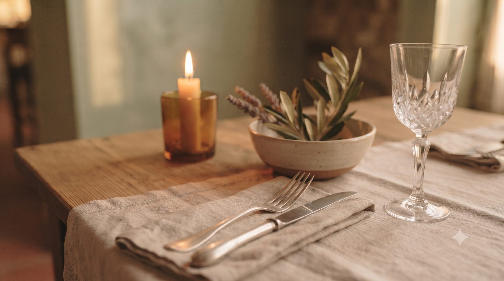

Benvenuti all'Osteria Folino, dove i sapori della tradizione toscana incontrano l'accoglienza di casa.
Ogni piatto nasce da ingredienti scelti con cura e ricette che raccontano la nostra storia, per portare in tavola genuinità e gusto autentico.
Vi aspettiamo in Via Roma per condividere un momento di convivialità, buon vino e piatti fatti come una volta.
Il piatto del mese arriva presto.

Demo di portfolio — puoi provare il flusso, la prenotazione non viene salvata davvero.
Richiesta inviata! Il tavolo è in attesa di conferma da parte nostra.
Conferma anche su WhatsApp"Atmosfera calda e piatti fatti con amore, si torna sempre alla ricetta della nonna."
— Giulia"Servizio gentile e menù ricco, ottimo rapporto qualità prezzo."
— Marco"Il posto giusto per una cena in compagnia, consigliatissimo!"
— Federica